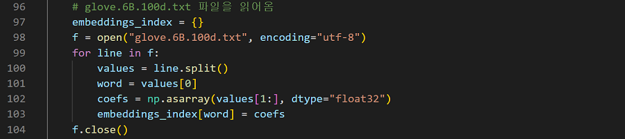
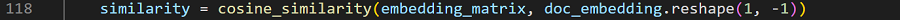

사전 교육된 자료 읽어오기
GloVe 6B 100d 파일을 읽어오기

단어 백터화
각 단어들에 대한 벡터화
전체 단어 평균 추출
전체 단어 벡터의 평균을 구하여 가장 연관성있는 단어 벡터값 추출
코사인 유사도 비교
평균 벡터값과 각 단어벡터와 코사인 값을 비교하여 가장 1에 가까운 단어들로 추출

단어 선별
유사도가 높은 단어순에서 명사만 추출 후 저장
간단한 설명
단어 벡터화
GloVe에서 사전 정의된 벡터값으로 단어별 벡터화 후 좌표에 위치
실제 단어 분포도
전체 단어의 평균값 추출
한 컨텐츠에 대한 데이터들이기에 한 점에 집중되어 있을 것이라 판단

코사인유사도 비교
평균 벡터와 각 벡터들의 코사인 유사도 비교